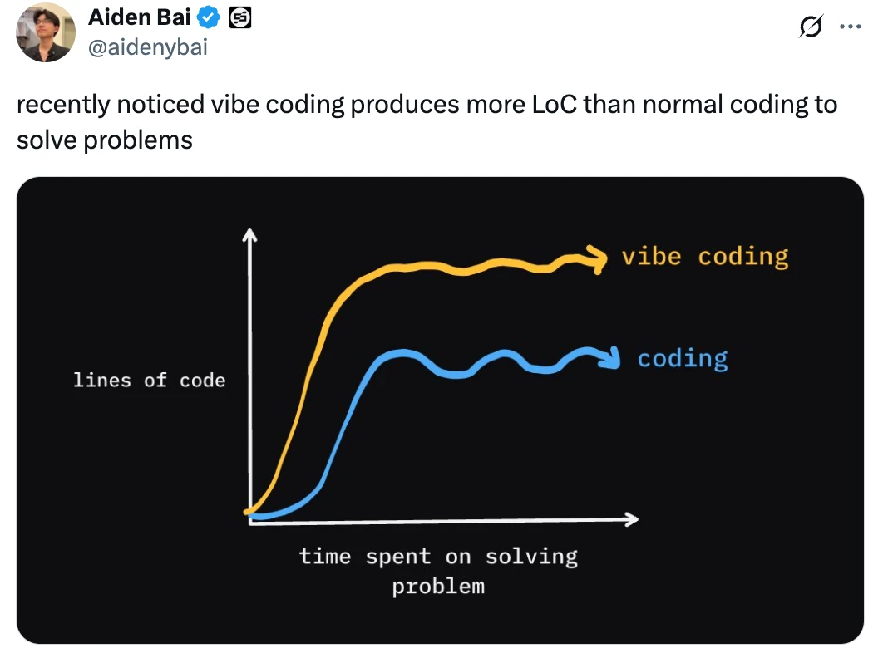

weekly AI awards üèÜ
the word of the week
: @OpenAI sycophancy
best local model
: @Alibaba_Qwen Qwen3-8B
remote MCP
: @AnthropicAI goes beyond localhost
distilling from o3
: Phi4-Reasoning
Use
◀
and
▶
keys to navigate through slides.
Click on any link/image to access the source.
Check the
archive of weekly awards
.
